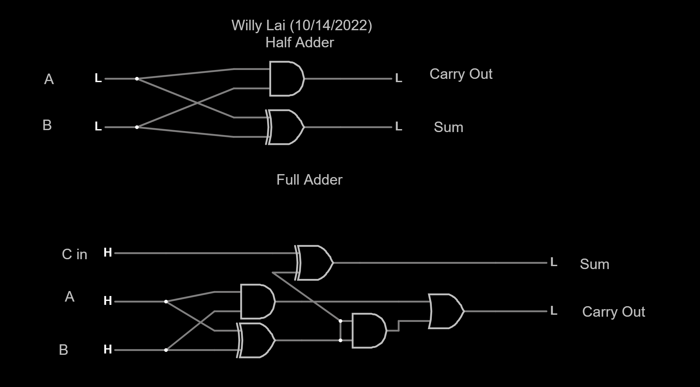

Home
Why a Digital Portfolio?
CS-I Journals
Name: Willy Lai
Journal: J1017
Date: 9-Sep-2022
I have recieved assistance from: Coder Merlin
I assisted: NO ONE
1.1: What truth table do you recognize that produces the output of the Carry column?
I recognize the AND truth table.
1.2: What truth table do you recognize that produces the output of the Sum column?
I recognize the XOR truth table.
2.1: What do you notice about the relationship between the first-half (top four rows) of the full-adder as compared to all of the rows of the half-adder?
The "S" output for the first-half of the full-adder are the same.
2.2: Why is this true?
It is true because there are no carry ins for the first-half.
3.1: Why does the least significant bit position use a half-adder rather than a full-adder?
A half-adder is used because it does not require a third bit which is why a carry in is not needed.
3.2: Assume that proper inputs are applied for all bits in numbers A and B. Will the correct output from S be available instantaneously? If not, why not?
No, because the sum of the inputs from the half-adder and full-adder have to be accounted for.
3.3: Assume that we have a standard (non-scientific calculator) capable of adding two 16-bit words. Two numbers, A and B, are added together. After the addition, it is noted that C15 is high. What can we infer? What is this state commonly called?
We can infer that that the calculated number is greater than the 16 bit interger. This state is commonly called the 16 bit interger limit.

What did I learn? What is the "big idea"?
I learned about half and full adders. The big idea is how I can use this for future purposes.
What challenges did I encounter?
I had a slightly difficult challenge to figure out how to use them on the falstead editor.
How could this experience be improved?
A more simplified explanation is needed first.
Free Reflection: How has what I've learned affected my thinking?
It makes me wonder on how computers work more.